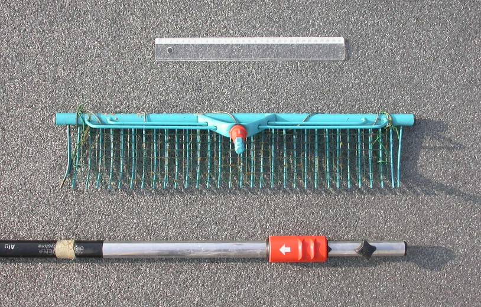
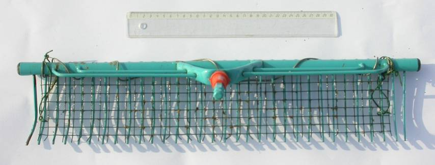
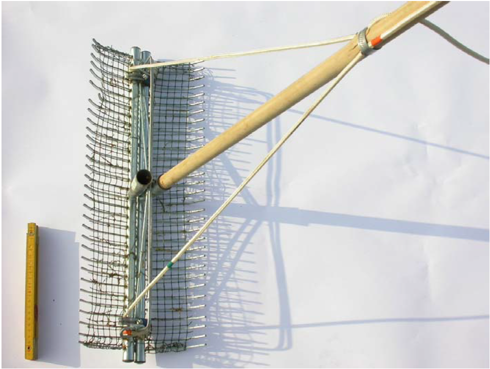
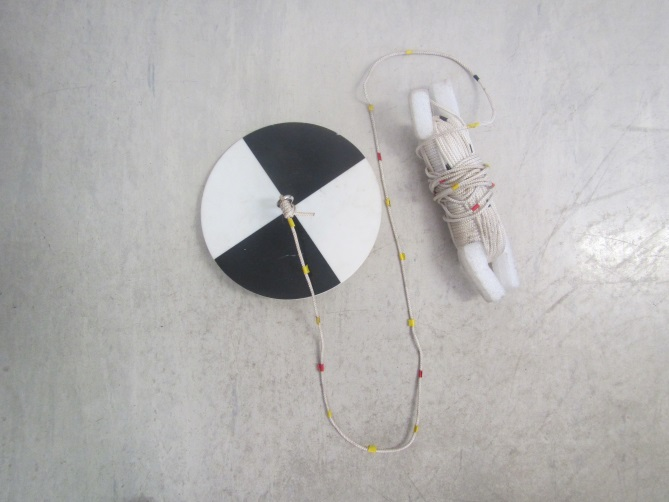

Veldprotocol LSVI stilstaande wateren
An Leyssen
 0000-0003-3537-286X
0000-0003-3537-286X
Instituut voor Natuur- en Bosonderzoek (INBO)
an.leyssen@inbo.be
Jo Packet
0000-0001-5590-323X
Instituut voor Natuur- en Bosonderzoek (INBO)
jo.packet@inbo.be
Kevin Scheers
0000-0002-4756-4247
Instituut voor Natuur- en Bosonderzoek (INBO)
kevin.scheers@inbo.be
Vincent Smeekens
0000-0003-2996-2716
Instituut voor Natuur- en Bosonderzoek (INBO)
vincent.smeekens@inbo.be
Florian Van Hecke
0009-0004-3499-2279
Instituut voor Natuur- en Bosonderzoek (INBO)
florian.vanhecke@inbo.be
2025-11-21
10.5281/zenodo.17668730
Metadata
| reviewers | documentbeheerder | protocolcode | versienummer | taal | thema |
|---|---|---|---|---|---|
| Toon Westra | Toon Westra | sfp-408-nl | 2025.03 | nl | vegetation |
Controleer deze tabel om te zien of een meer recente versie beschikbaar is.
1 Wijzigingen t.o.v. vorige versies
1.1 2025.03
- Eerste versie van het protocol
2 Afhankelijkheden
| Protocolcode | Versienummer | params | Opgenomen als subprotocol |
|---|---|---|---|
| sfp-113-nl | 2023.04 | NA | FALSE |
3 Onderwerp
3.1 Definities en afkortingen
31xx: afkorting voor Natura2000-habitattypen 3110, 3130, 3140, 3150 en 3160
Habitattypen van stilstaand water die beschermd zijn door de habitatrichtlijn:
- 2190_a - Waterhoudende depressies in vochtige duinvalleien (Denys et al. 2021)
- 3110 - Mineraalarme oligotrofe wateren van de Atlantische zandvlakten (Littorelletalia uniflora) (Decleer 2007, Scheers et al. 2020).
- 3130 - Oligotrofe tot mesotrofe stilstaande wateren met vegetatie behorend tot de Littorelletalia uniflora en/of de Isoeto-Nanojuncetea (Decleer 2007, Scheers et al. 2020)
- 3130_aom: subtype aom, subtype oeverkruid (Littorelletea)
- 3130_na: subtype na, subtype dwergbiezen (Isoeto-Nanojuncetea)
- 3150 - Van nature eutrofe meren met vegetaties van het type Magnopotamion of Hydrocharition (Decleer 2007, Scheers et al. 2020)
- 3160 - Dystrofe natuurlijke poelen en meren (Decleer 2007, Scheers et al. 2020)
Isoëtiden: laagblijvende rozetbladige planten met stevige, holle, lijn- of priemvormige bladeren bv. knolrus (Juncus bulbosus), oeverkruid (Littorella uniflora), waterlobelia (Lobelia dortmanna), pilvaren (Pilularia globulifera), …
LSVI: Lokale staat van instandhouding; instrument om lokaal de toestand van een habitattype te evalueren aan de hand van structuur- en vegetatiekenmerken (Oosterlynck et al. 2020).
Steekproefpunt of (veld)locatie: Voor het habitatkwaliteitsmeetnet (zie verder) komt de steekproefeenheid voor stilstaande wateren overeen met de watervlakkencode (Westra et al., 2022). Dit is het niveau waarop de biotische karakterisatie wordt beoogd.
3.2 Doelstelling en toepassingsgebied
Het doel van het veldprotocol is om gegevens te verzamelen van bepaalde indicatoren (vegetatiesamenstelling en structuurkenmerken) die een beoordeling van de LSVI toelaten voor habitattype 2190_a, 3110, 3130_aom, 3130_na, 3140, 3150 en 3160. Deze LSVI-indicatoren zijn beschreven door Oosterlynck et al. (2020).
Het veldprotocol wordt gebruikt voor het bemonsteren van de steekproefpunten van het habitatkwaliteitsmeetnet voor bovengenoemde habitattypen. De selectiemethode van steekproefpunten is beschreven in het rapport over de habitatkwaliteitsmonitoring (Westra et al., 2014; Westra et al., 2022). Dit meetnet is geconcipieerd om de habitatkwaliteit van habitattypen van stilstaande wateren op Vlaams schaalniveau te kunnen inschatten. De resultaten van dit meetnet worden o.a. gebruikt voor de 6-jaarlijkse rapportage over de staat van instandhouding van de habitattypes 31xx en 2190_a aan de Europese Commissie.
4 Beperkingen van het protocol
In sommige omstandigheden kan er geen opname gemaakt worden. De reden hiervoor wordt genoteerd:
- Tijdelijk ongeschikt (tijdelijk niet toegankelijk door wegenwerken of inrichtingswerken, gevaarlijke hond, drooggevallen, te hoge waterstand, …): het loont in dit geval de moeite om de locatie later in het jaar of tijdens het volgende jaar opnieuw te bezoeken;
- Permanent ongeschikt (permanent niet toegankelijk, niet bereikbaar op een veilige manier, geen toestemming voor betreding, …).
Het veldbezoek wordt uitgevoerd in het groeiseizoen van de water- en oeverplanten (mei-september). Afhankelijk van het habitattype en de verwachte soorten worden bepaalde veldbezoeken bij voorkeur vroeger of later in het groeiseizoen uitgevoerd (Zie Tabel 4.1). Voor sommige habitattypen is een aanvullend veldbezoek tijdens het voorjaar noodzakelijk om sleutelsoorten te identificeren. Zo bereikt bijvoorbeeld Tolypella intricata, een kenmerkende soort voor habitattype 3140, een optimale groei in april-mei. Ook zijn voor de identificatie van waterranonkels bloeiende exemplaren nodig (mei-juni; habitattype 3130_aom). Indien nodig, kan de soortenlijst tijdens een later veldbezoek (augustus) aangevuld worden met soorten die hun optimum later in het groeiseizoen bereiken. Om de kans op afsterven van watervegetatie te minimaliseren, wordt aanbevolen de screening van de vegetatiesamenstelling best voor eind september uit te voeren. In eutrofe plassen kan lichtdeprivatie door algenbloei leiden tot vroegtijdig afsterven van watervegetatie, soms al vanaf juni. Daarnaast kunnen sommige wateren in de zomer sterk vertroebelen door intensieve recreatie of vroegtijdig gemaaid worden, waardoor veldbezoeken tijdig moeten plaatsvinden.
Klimatologische factoren, zoals langdurige temperatuurextremen, kunnen de tijdelijke aan- of afwezigheid van vegetaties en specifieke indicatorsoorten beïnvloeden.
| Code | April | Mei | Juni | Juli | Augustus | September | Oktober |
|---|---|---|---|---|---|---|---|
| 2190_a | - | x | x | x | x | (x) | - |
| 3110 | - | (x) | x | x | x | x | (x) |
| 3130_aom | - | x | x | x | x | (x) | - |
| 3130_na | - | x | x | x | x | x | - |
| 3140 | (x) | x | x | x | x | (x) | - |
| 3150 | - | x | x | x | x | x | - |
| 3160 | (x) | x | x | x | x | x | x |
5 Principe
De LSVI geeft inzichten in de kwaliteit van een habitat voor een bepaalde locatie op basis van de vegetatiesamenstelling en structuurkenmerken (Oosterlynck et al. 2020). De LSVI-indicatoren kunnen ingedeeld worden in drie categorieën: vegetatie, verstoring en habitatstructuur. Voor elke indicator wordt een grenswaarde gegeven om een gunstige toestand te onderscheiden van een ongunstige toestand. Via dit veldprotocol worden de nodige gegevens verzameld om alle LSVI-indicatoren van de habitattypen 2190_a en 31xx te kunnen beoordelen. De bepaling of berekening van deze status per LSVI-indicator en het globaal eindoordeel per locatie vormt geen onderdeel van dit protocol. Hierbij kan de LSVI-rekenmodule gebruikt worden (Lommelen et al. 2024).
6 Vereiste competenties
Er is voldoende kennis van de veldkenmerken van macrofyten die in stilstaande wateren worden aangetroffen vereist. Daarnaast dient men vertrouwd te zijn met technieken om ze te kunnen identificeren. Het gebruik van de Secchi-schijf (protocol sfp-113-nl 2023.04) moet bekend zijn.
Daarnaast zijn volgende algemene competenties vereist (naar Bijkerk, 2014):
- Nauwkeurigheid:de uitvoering van veldmetingen en het vastleggen van veldwaarnemingen vereisen een grote mate van accuraatheid;
- Vermogen te plannen en te organiseren: bij de uitvoering van meetprogramma’s moeten tal van werkzaamheden gepland, georganiseerd en op elkaar afgestemd worden. De veldmedewerker moet in staat zijn om hier zelfstandig of in overleg met de projectleider uitvoering aan te geven;
- Zelfstandigheid: de veldmedewerker moet in staat zijn om het merendeel van de werkzaamheden zelfstandig (op locatie) uit te voeren;
- Vermogen tot samenwerken en communiceren;
- De veldmedewerker moet op de hoogte zijn van de na te leven veiligheidsprotocollen die gebonden zijn aan het uitvoeren van taken in, op en rond water. De veldmedewerker moet dan ook fysiek in staat kunnen zijn om dit protocol in veilige omstandigheden te kunnen uitvoeren (kunnen zwemmen, …).
7 Benodigdheden
Tabel 7.1 geeft een overzicht van de benodigde apparatuur en materiaal dat tijdens het veldwerk wordt gebruikt; enkele daarvan specifiëren we hieronder. Tabel 7.2 geeft de benodigde apparatuur en materiaal voor bootwerk in diepe wateren.
| Item |
|---|
| Veldformulier en handleiding |
| Afgeprinte veldkaarten |
| Schrijfgerief: papier en potlood, (alcohol)stift |
| Klembord |
| GSM/Smartphone (en/of handcomputer/tablet of gps; zie verder) |
| Waterbestendig fototoestel of fototoestel met waterdichte behuizing |
| Lieslaarzen |
| Waadpak (zomer-/winterwaadpak) |
| Loep |
| Verrekijker |
| Secchi-schijf |
| Plooimeter |
| Hersluitbare zakjes |
| Waterdichte handschoenen |
| Ontsmettende zeep of handgel |
| Vegetatiehark met schaalverdeling |
| Flora van België (Verloove & Van Rossum, 2023) en/of andere determinatiewerken (zie Bijlage 1) |
| Item |
|---|
| Reddingsvesten (1 per persoon) |
| Reddingstouw |
| Roeispaan, 2 stuks |
| Monteerbare sonarapparatuur |
| Dubbelzijdige dreghark |
7.1 Apparatuur
7.1.1 Binoculaire stereomicroscoop en/of lichtmicroscoop
Planten die tijdens het veldwerk niet geïdentificeerd kunnen worden, kunnen in het labo met een binoculaire stereomicroscoop bekeken worden. Met vergrotingen tot minimaal 80x kunnen detailkenmerken zoals stengelharen, sporenkapsels, etc. bekeken worden. Beschikbaarheid van een tegenlichtbron is hierbij aan te raden. Voor sommige kenmerken kan best een lichtmicroscoop (100x en meer) gebruikt worden (stuifmeelkorrels, structuren op sporenkapsels, etc.).
7.1.2 GPS
Voor het navigeren naar het steekproefpunt volstaat een kaart of een gewone gps met een nauwkeurigheid van 3 à 6 m. Een tablet-gps, smartphone-gps of veldcomputer biedt bijgevolg voldoende nauwkeurigheid. Een RTK-gps is niet nodig voor dit type veldwerk, tenzij het een experimentele opzet zou betreffen die een hogere precisie vereist.
7.1.3 Handcomputer of tablet (optioneel)
Voor de positiebepaling of de invoer van veldgegevens op terrein kan gebruik gemaakt worden van een handcomputer of (rugged) tablet. Het toestel zelf of de hoes errond dient geschikt te zijn voor veldomstandigheden (schokbestendig, stofvrij en (spat)waterdicht).
7.1.4 Sonarapparatuur (bij bootwerk)
Het gebruik van sonarapparatuur is niet verplicht, maar kan nuttig zijn. Hiermee kan de waterdiepte gepeild worden om de groeidiepte van submerse vegetatie te achterhalen en tevens in ondiepe zones om te voorkomen dat de boot vastloopt of de motor stilvalt door contact met de bodem.
7.2 Materiaal
7.2.1 Veldloep
Voor de determinatie van planten is een goede loep nodig. De loep moet minstens 10x vergroten. Met een loep van 20x kunnen detailkenmerken (kranswieren, sterrenkroos, etc.) tijdens het veldwerk bekeken worden.
7.2.2 Vegetatiehark met telescopische steel
Een hark met telescopische steel maakt het mogelijk om waterplanten op te halen uit het water indien deze niet met de hand te bemonsteren zijn. Hiervoor wordt een hark van ca. 50 cm breed op een tot 3,9 m uitschuifbare steel, bijv. van het merk Gardena, gemonteerd (Figuur 7.1). Op de hark wordt volièredraad (1 cm brede mazen) bevestigd met ijzerdraad om kleine en fijne waterplanten te kunnen bemonsteren (Figuur 7.2). Op het vaste deel van de steel kan om de 20 cm een merkteken aangebracht worden om de waterdiepte te bepalen.

Figuur 7.1: Hark met uitschuifbare steel van het merk Gardena (foto Jo Packet)

Figuur 7.2: Hark met volièredraad (foto Jo Packet)
7.2.3 Dubbelzijdige dreghark
Bij inventarisatie van de vegetatie in diepere zones met een boot, wordt een dreghark gebruikt (Figuur 7.3). Deze bestaat uit een dubbelzijdige, metalen hark met gekromde tanden, die bedekt is met volièredraad. Deze worden met de rugzijden aan elkaar bevestigd. De dreghark is voorzien van korte steel, bevestigd aan een lange, stevige nylonkoord van een 25-tal meter lang. Om de dreghark te gebruiken wordt deze vanuit de boot in het water geworpen zoals een werpanker en over een afstand van ongeveer 10 meter over de bodem getrokken. Het is belangrijk om de hark direct en in één vloeiende beweging omhoog te halen, zonder pauzes, zodat de verzamelde vegetatie erop blijft liggen.

Figuur 7.3: Dubbelzijdige dreghark (Schneiders et al., 2004; foto Jo Packet)
7.2.4 Hersluitbare zakjes en (alcohol)stift
Als identificatie in het veld niet mogelijk is, wordt het plantenmateriaal naar het labo gebracht voor verdere determinatie. Voor het tijdelijk bewaren van plantenmateriaal worden hersluitbare zakjes gebruikt. Deze worden gelabeld met een (alcohol)stift (veldcode en datum) en/of voorzien van een papieren label met dezelfde informatie in potlood, dat in het zakje wordt bijgevoegd.
7.2.5 Secchi-schijf
Een secchi-schijf met een diameter van 20 cm (Figuur 7.4) wordt gebruikt om de secchi-diepte te bepalen. Het koord waaraan de secchi-schijf is bevestigd, is voorzien van een maatverdeling om de diepte te kunnen bepalen. Indien een secchi-schijf met andere diameter wordt gebruikt, dient dit vermeld te worden.

Figuur 7.4: Secchi-schijf met maatverdeling op het touw
7.2.7 Determinatiewerken
Relevante determinatiewerken worden in Bijlage 1 opgesomd.
7.2.8 Boot
Een boot wordt enkel gebruikt bij diepere plassen op meer dan 3 à 4 m diepte. Bij grote, diepe plassen wordt een boot met motor gebruikt omdat het slepen van een werphark over de waterbodem anders niet praktisch haalbaar is. De afmetingen van de boot zijn bij voorkeur minstens 4 m lengte op 2,00 m breedte. Bij deze afmetingen is er voldoende ruimte om het nodige materiaal te stockeren tijdens het bootwerk. Ook moet de boot voldoende stabiliteit bieden om rechtstaand met de dreghark te kunnen werken. In sommige gevallen kan een kleinere boot met elektromotor worden gebruikt. Dit type boot kan handig zijn om grote ondiepere watersystemen met variabele diepte te bemonsteren of indien rekening gehouden moet worden met verstoringsgevoelige fauna of bijzondere kwaliteitseisen (bv. drinkwaterproductie).
8 Werkwijze
8.1 Uitvoering
8.1.1 Voorafgaand aan het terreinwerk
Volgende taken dienen voorafgaand aan het veldbezoek uitgevoerd te worden:
Afdruk van veldkaarten met gepast schaalniveau en de recentst beschikbare orthofoto, bij voorkeur op A3 formaat.
Afdruk van veldformulieren van de verschillende habitattypen (dubbelzijdig)
Offline zetten van eventuele kaarten/applicaties op handcomputer/tablet voor het geval mobiele data niet beschikbaar is in het veld
Eigenaar/beheerder contacteren
Adres of routebeschrijving van locatie opzoeken
Inschatten of een (belly)boot nodig is voor het uitvoeren van de screening van de vegetatiesamenstelling
8.1.2 Lokaliseren en documenteren van veldlocatie
Navigeer met een gps naar de oever van de veldlocatie.
Indien het steekproefpunt tijdelijk of permanent ongeschikt is (zie beperkingen), wordt dit samen met de reden genoteerd op het veldformulier. Bij een permanent ongeschikt meetpunt wordt dit vervangen door het eerstvolgende reservepunt. Bij tijdelijke ongeschiktheid wordt de locatie later in het jaar of het daaropvolgende jaar opnieuw bezocht. Ook opmerkingen in verband met betreding en toegang worden genoteerd.
Alvorens het water betreden wordt, wordt ingeschat wat de geschikte kledij is voor de screening. Bij ondiepe plassen kan er gekozen worden voor lieslaarzen of een waadpak. Bij diepe plassen zal het gebruik van een boot noodzakelijk zijn. Wanneer er met een boot gewerkt wordt, dienen minstens 3 personen aanwezig te zijn: 2 in de boot voor de screening en iemand op de oever. Men dient zich aan de veiligheidsvoorschriften te houden.
8.1.3 Bepaling aanwezige habitattypen
Bepaal eerst of het geselecteerde habitattype aanwezig is volgens de praktische handleiding voor het typeren van de stilstaande wateren in Vlaanderen (Scheers et al. 2016) en de beschrijving van habitattype 2190_a (Denys et al. 2021). Voor alle habitat(sub)typen die aanwezig zijn in de plas wordt een afzonderlijk veldformulier ingevuld.
Oppervlakteaandeel van habitat in plas: Mits er meerdere typen aanwezig zijn in een waterlichaam, dan wordt er getracht een representatieve verdeling aan de types binnen de plas te geven. De som van de verdeling moet steeds 100% zijn.
Ook de reden van afwezigheid van het habitattype wordt opgegeven, m.n. waarom voldoet de locatie niet aan de definitie van het habitattype:
Te weinig open water aanwezig (gedomineerd door helofytenvegetaties, dus behorend tot een moerastype),
Gracht
De plas is gedempt
Er zijn geen soorten aanwezig die typisch zijn voor het habitattype
…
8.1.4 Screening van de vegetatiesamenstelling
De waterdiepte bepaalt de wijze van screening:
Indien de waterdiepte dit toelaat, wordt de screening al wadend uitgevoerd.
Indien het centrale deel van de plas ondoorwaadbaar is, maar de zone nabij de oever wel doorwaadbaar is, wordt het diepere deel harkend vanuit de doorwaadbare zone bemonsterd.
In diepe, grotere wateren wordt met behulp van een kleine boot geïnventariseerd.
Vertrek vanop de oever van de locatie, waad langsheen de oever om de screening van de vegetatiesamenstelling te maken. Dit kan in wijzerszin of tegenwijzerzin gebeuren, afhankelijk van de stand van de zon. Waden met de zon in de rug is optimaal, omdat dit de zichtbaarheid van de submerse vegetatie vergroot en de reflectie beperkt. Bij ondiepe plassen wordt zig-zag-gewijs van de oever naar het centrale deel van de plas gewaad om een beeld te krijgen van de volledige plas. Afhankelijk van de grootte van de plas, de diversiteit aan soorten en de vegetatiedichtheid zal het zigzag-patroon meer of minder dens zijn.
Bij diepe, vegetatierijke plassen wordt het centrale deel met een boot geïnventariseerd, waarbij de vegetatie door middel van een dreghark wordt opgehaald. Eerst wordt de kolonisatiediepte bepaald, dit is de maximale diepte waar er vegetatiegroei wordt waargenomen. Daarna wordt de vegetatiezone in transecten gevaren, waarbij op verschillende dieptes de vegetatie met een dreghark wordt bemonsterd. Het diepe onbegroeide deel wordt tenslotte sporadisch bemonsterd om te checken op vegetatie.
De screening van de vegetatiesamenstelling wordt beperkt tot het waterdeel en de oeverzone die frequent onder water komt te staan. Bij plassen met een zeer geleidelijk talud, bijvoorbeeld bij habitattype 3160, kan de overgang van de oeverzone soms breed zijn; hier wordt echter de directe oeverzone inbegrepen in de screening. Bij twijfel wordt de screening beperkt tot de contour van watervlakken; deze toont de begrenzing door de winterwaterstand. De meer afgelegen oeverzone kan in dit geval deel uitmaken van een ander habitattype (hoogveen/natte heide) en aldus volgens een ander protocol worden beoordeeld.
8.1.4.1 Bedekking individuele soorten
Eerst wordt een lijst van de aanwezige sleutel- en indicatorsoorten opgesteld (Zie veldformulieren Bijlage 2 t.e.m. 8 en Oosterlynck et al. 2020). Na de volledige plas te hebben gescreend, worden de bedekkingen genoteerd met de bedekkingsschaal van Tabel 8.1.
| Code | Tansley | Beschrijving |
|---|---|---|
| r | zeldzaam | < 3 exemplaren |
| o | occasioneel | > of = 3 exemplaren, < 5% bedekkend |
| f | frequent | bedekkend (ca. 5 %), oplopend tot 15-20% of > 100 exemplaren |
| a | abundant | bedekking 15 (20) < x < 40% |
| cd | co-dominant | bedekking > 40% van meerdere soorten |
| d | dominant | bedekking > 40% van 1 soort |
Indien identificatie op het terrein niet mogelijk is, verificatie door een specialist nodig is, of het een zeer zeldzame vondst betreft, worden (delen van) planten meegenomen in een hersluitbaar plastic zakje, licht bevochtigd en voorzien van de locatiecode om deze later in het labo te kunnen determineren. Het volgnummer van het herbariumspecimen wordt genoteerd op het veldformulier. Het specimen wordt best uit de zon, en zo koel mogelijk gehouden na verzamelen en tijdens transport. Achteraf kan dit nog enkele dagen in de koelkast worden bewaard alvorens gedetermineerd of gefixeerd te worden.
8.1.4.2 Bedekking van groepen van soorten
Sleutelsoorten: de bedekking van sleutelsoorten per habitattype wordt individueel ingeschat volgens de Tansley-schaal (Tabel 8.1). De totale bedekking (%) van alle sleutelsoorten samen wordt eveneens genoteerd. Voor habitattype 2190_a worden sleutelsoorten onderverdeeld in hydrofyten en niet-hydrofyten. Voor habitattype 3140 wordt aangegeven of de kranswiervelden bestaan uit meer of minder dan de helft uit sleutelsoorten (op basis van bedekking).
Bedekking verstoringsindicatoren: Het percentage verstoringsindicatoren (eutrofiëringsindicatoren, verzuring en invasieve exoten) wordt ingeschat als oppervlakte-percentage, oftewel de projectie t.o.v. het volledige wateroppervlak. Voor habitattype 2190_a wordt de kroosbedekking (%) genoteerd als eutrofiëringsindicator.
Indien verschillende habitattypen en/of subtypen voorkomen, wordt voor elk van de typen de verstoringspercentages op plasniveau ingeschat. Voor bijvoorbeeld de gezamenlijke aanwezigheid van habitattypen 3130_na als 3130_aom in een plas, worden eutrofiëringspercentages voor beide subtypes op de volledige plas ingeschat.
Voor habitattype 2190_a wordt het percentage van verschillende vegetatielagen ingeschat:
(bodemwortelende) Submerse vegetatie: procentuele oppervlakte van de plas bedekt met ondergedoken en wortelende vegetatie; dit is inclusief Ceratophyllum en exclusief Utricularia.
Kranswieren: oppervlakte van de plas bedekt met Characeae. Opgelet, deze zijn ook vervat in het percentage submerse vegetatie, dus het percentage submerse vegetatie is steeds groter dan of gelijk aan het percentage kranswieren.
Overhangende bomen en struiken: dit is de som van de oppervlakten van het wateroppervlak en de langdurig geïnundeerde oever dat beschaduwd wordt door overhangende bomen/struiken, dus deze die zich niet in de plas bevinden. Bij het bepalen van de beschaduwing wordt een verticale projectie van de overhangende boom/struiken gebruikt. Dit geeft een indicatie van slechte lichtomstandigheden in het water, en daardoor vegetatiegroei belemmert.
Bomen en struiken: percentage bedekking van het wateroppervlak en de langdurig geïnundeerde oever met bomen of struiken; enkel deze die zich in de plas bevinden of die in de geïnundeerde oever wortelen. Dit is een indicatie van successie.
8.1.4.3 Structuurkenmerken
Verticale structuur
De verticale structuur brengt de successie in rekening. Een overmatige aanwezigheid van hoger groeiende, meer concurrentiekrachtige planten bemoeilijkt de groei van de kenmerkende isoëtiden en dwergbiezen:
Isoëtiden: Voor habitattype 3110 wordt de bedekking van isoëtiden versus andere groeivormen genoteerd, oftewel door een Tansley-inschatting per groep te noteren of door aan te kruisen of het aandeel isoëtiden groter of kleiner is dan de andere groeivormen.
‘Opgaande’ soorten: voor habitattype 3130_na wordt de overgroeiing van de vegetatievlekken (definitie: zie verder) door hoger groeiende niet-sleutelsoorten ingeschat. Dit is de vegetatie hoger dan 15 cm en kan naast helofyten ook bestaan uit submerse vegetatie die zorgt voor concurrentie. Een overdadige ontwikkeling van helofyten zorgt voor concurrentie voor licht en ruimte, waardoor de groei van ondergedoken en drijvende vegetatie wordt bemoeilijkt. De bedekking van helofyten (exclusief sleutelsoorten) wordt als percentage ingeschat bij habitattype 3130_aom, 3140 en 3150; hierbij wordt dit percentage ingeschat op plasniveau; m.n. % bedekking ten opzichte van het wateroppervlak. Ook bij habitattype 2190_a komt dit aan bod als de bedekking van robuuste monocotylen.
Horizontale structuur
Bij de horizontale structuur wordt beoordeeld of de typische vegetaties voldoende groot zijn, de zogenaamde vegetatievlekken die voornamelijk bestaan uit sleutelsoorten. De omschrijving van de term vegetatievlek verschilt per habitattype:
3110: > of = 4 exemplaren van sleutelsoorten per m² of 4 exemplaren staan op maximum 0,5 m van elkaar;
3130_aom en 3130_na: ijle tot dichte vegetaties waarin sleutelsoorten meer bedekken dan andere soorten;
3140: kranswiervelden of dichte vegetaties, voor meer dan ¾ bestaande uit kranswieren (zowel sleutelssoorten als overige kranswieren);
3150: vegetaties waarin sleutelsoorten meer bedekken dan andere soorten.
Tijdens het waden wordt de grootte van deze vegetatievlekken ingeschat. Er wordt van twee vegetatievlekken gesproken indien de afstand tussen beide minstens 2 meter bedraagt. Er is geen minimum-oppervlakte om van een vegetatievlek te kunnen spreken. Wanneer de sleutelsoorten zeer schaars aanwezig zijn en er slechts enkele exemplaren worden aangetroffen, wordt dit als een vegetatievlek van de laagste grootteklasse gerekend.
De oppervlakteklasse van de grootste aaneengesloten vegetatievlek wordt aangekruist op het veldformulier. Bij de doorgaans schaarse vegetaties van habitattype 3160 wordt dit criterium beoordeeld door de ruimtelijke samenhang met het hydrologisch samenhangende successiestadium ‘oligotroof en zuur overgangsveen’ (habitattype 7140_ oli) te beoordelen. De aan- of afwezigheid van de aanpalende habitatvlekken van het habitattype 7140_oli wordt aangekruist op het veldformulier. Voor een beschrijving van dit habitattype wordt verwezen naar Decleer (2007).
8.1.5 Algemene standplaatskenmerken
8.1.5.1 Waterpeil
Waterpeil: Een afwijkend waterpeil wordt genoteerd. Bij een uitzonderlijk hoog waterpeil wordt afgeraden om de screening uit te voeren, enerzijds omwille van veiligheid en anderzijds vanwege het beperkt doorzicht dat meestal gepaard gaat met een uitzonderlijk hoog waterpeil.
Schommeling winter/zomer: de schommeling tussen winter- en zomerwaterpeil wordt ingeschat door de vegetatie en structuurkenmerken van de oeverzone net boven het waterpeil te beoordelen. De screening vindt plaats tijdens het seizoen wanneer het waterpeil doorgaans het laagst staat. Aan de oeverzijde kan ingeschat worden hoeveel hoger het winterpeil is.
Permanentie: Voor habitattype 2190_a wordt aangekruist of de plas permanent water bevat of niet. Er wordt een onderscheid gemaakt tussen: permanent waterhoudend (nooit droogvallend), semi-permanent (soms droogvallend) of periodiek droogvallend (jaarlijks droogvallend).
8.1.5.2 Maximale waterdiepte
De maximale waterdiepte wordt bepaald door middel van een plooimeter, de sonar of de lengteaanduiding op het koord van de dreghark. De diepteklasse van deze maximale waterdiepte wordt vervolgens aangekruist op het veldformulier.
8.1.5.3 Helderheid van de waterkolom
Indien er geen bodemzicht is, wordt de secchi-diepte bepaald. De schijf wordt langzaam in het water gelaten en de diepte waarop het onderscheid tussen de witte en de zwarte vlakken niet meer zichtbaar is, wordt afgelezen van de maatverdeling op het touw. Dit wordt enkele malen herhaald. Indien de schijf tot op de bodem zichtbaar is, wordt de waterdiepte van de meetplaats genoteerd als secchi-diepte. De meting van de secchi-diepte dient - indien mogelijk - op het diepste punt van de plas uitgevoerd te worden. Zie ook protocol sfp-113-nl 2023.04.
8.2 Registratie en bewaring van resultaten
8.2.1 Invoer veldgegevens
De invoer van veldgegevens gebeurt digitaal op het terrein met een (rugged) tablet in INBOVEG (Survey = HT31xx_LSVI_StilstaandeWateren en HT2190_a_LSVI_StilstaandeWateren) of analoog op een veldformulier (zie bijlage 2 t.e.m. 8).
8.2.2 Determinaties
Soorten die in het veld niet op naam gebracht kunnen worden, kunnen tot hooguit één week gekoeld bewaard worden. Ze kunnen in het labo op naam gebracht worden met een loep, stereomicroscoop of lichtmicroscoop en relevante determinatiewerken (Bijlage 1). Indien relevant, kunnen foto’s genomen worden. De geïdentificeerde specimen worden bewaard in een herbarium.
9 Kwaliteitszorg
De checklist van het veldmateriaal staat in Tabel 7.1. Dit materiaal is in goede staat en wordt meegenomen bij de uitvoering van het veldwerk.
Het veldformulier wordt volledig ingevuld. Net na de inventarisatie wordt gecontroleerd of alle velden van het veldformulier zijn ingevuld.
In INBOVEG zijn een aantal automatische controles ingebouwd of verplicht in te vullen velden aangeduid, waardoor de kans op foutief ingevoerde waarden wordt verminderd.
Specimen die op het terrein niet op naam kunnen worden gebracht, worden meegenomen naar het labo ter identificatie. Bij twijfel wordt dit specimen voorgelegd aan derden ter controle.
Voor elke in INBOVEG ingevoerde opname wordt gecontroleerd of het aantal en de bedekking van de ingevoerde soorten overeenkomt met deze van het veldformulier. Nadat alle opnames van een veldseizoen zijn ingevoerd in INBOVEG, wordt via query’s of kruistabellen gecontroleerd of alle kenmerken voor alle opnames werden ingevoerd in INBOVEG.
10 Veiligheid
Voor screening van de vegetatiesamenstelling in ondiepe wateren (waterdiepte < 1 m) kan alleen op terrein worden gegaan; bij diepere wateren (> 2 m) wordt steeds met 2 personen op het terrein gegaan. Voor wateren met een diepte tussen 1 en 2 m hangt het van de veldomstandigheden af of het veldwerk alleen kan uitgevoerd worden of niet.
Neem steeds een hark of stevige stok mee bij het waden. Je kan er de waterdiepte mee peilen voor je in het water gaat; je kan deze gebruiken om je evenwicht te behouden of als hulpstuk gebruiken om uit het water te geraken bij steile oevers.
De veldmedewerker beschikt steeds over een GSM en een lijst van nuttige telefoonnummers.
Tijdens een opname in verontreinigd water draagt men waterdichte handschoenen; na de opname wast men de handen met ontsmettende zeep om het risico op besmetting te beperken.
Voorzichtigheid is ten zeerste geboden bij diepe wateren, bij weke waterbodem en bij gladde of zeer steile taluds. In deze omstandigheden kan een alternatieve opnametechniek toegepast (zie screening van de vegetatiesamenstelling – de waterdiepte bepaalt de wijze van screening). Gebruik een reddingstouw of reddingsvest wanneer de situatie dit vereist.
Bij bootwerk wordt er minstens met twee personen geïnventariseerd die voldoende ervaring hebben om de boot en uitrusting te bedienen. De boot, reddingsvesten en roeispanen zijn in goede staat en indien nodig gekeurd volgens de vereiste voorschriften. Bij uitval van de motor of in geval van nood kan de boot bediend worden door roeispanen (min. 2 stuks).
Tijdens het veldwerk gelden volgende aanvullende veiligheidsregels:
Algemene veiligheidsregels rond het werken in en nabij water (protocol in ontwikkeling sfp-112).
Bioveiligheidsmaatregelen voor het voorkomen van de verspreiding van invasieve exoten (protocol in ontwikkeling sfp-015).
11 Samenvatting
STAP 1. Voer de taken voorafgaand aan het veldbezoek uit en controleer de lijst met benodigdheden voor vertrek.
STAP 2. Navigeer met GPS naar de locatie. Bepaal of de locatie geschikt is voor een screening van de vegetatiesamenstelling. Is de locatie toegankelijk? Is het habitattype aanwezig (niet steeds op het eerste zicht te bepalen). Indien de plas ontoegankelijk is of geen habitat blijkt te bevatten wordt dit gedocumenteerd en wordt er geen screening gemaakt.
STAP 3. Voer de screening van de vegetatiesamenstelling uit. Afhankelijk van de waterdiepte gebeurt dit op één van volgende manieren: door het water wadend, harkend vanuit het doorwaadbare deel, harkend vanaf de oever of met boot. Ook de standplaatskenmerken worden genoteerd op het veldformulier.
STAP 4. Soorten die niet konden worden geïdentificeerd op terrein, worden binnen de week na bemonstering gedetermineerd. Gegevens worden ingegeven in INBOVEG indien dit nog niet is gebeurd op terrein.
Referenties
Bijkerk R. (2014). Handboek hydrobiologie. Deel 1. Biologisch onderzoek voor de ecologische beoordeling van Nederlandse zoete en brakke oppervlaktewateren. Stichting Toegepast Onderzoek Waterbeheer, Amersfoort.
Decleer K. (2007). Europees beschermde natuur in Vlaanderen en het Belgisch deel van de Noordzee : habitattypen : dier- en plantensoorten. Mededelingen van het Instituut voor Natuur- en Bosonderzoek 2007(1). Instituut voor Natuur- en Bosonderzoek, Brussel.
Denys L., Packet J., Provoost S. (2021). De vegetatie van duinwateren aan de Vlaamse kust. Kenmerken, beheer en lokale staat van instandhouding. Rapporten van het Instituut voor Natuur- en Bosonderzoek 2021 (39). Instituut voor Natuur- en Bosonderzoek, Brussel.
Denys L. (2011). Advies over de bepaling van de vegetatieontwikkeling van submerse vegetatie en enkele aanpassingen m.b.t. de beoordeling van macrofyten in Vlaamse meren voor de Europese Kaderrichtlijn Water. Adviezen van het Instituut voor Natuur- en Bosonderzoek 2011 (109). Instituut voor Natuur- en Bosonderzoek, Brussel.
Lommelen E., Oosterlynck P., Van Spaendonk G., Van Calster H., Van Hove M., Westra T. (2024). LSVI: Rekenmodule Lokale Staat Van Instandhouding van habitattypen. R package version 0.1.3, https://github.com/inbo/LSVI.
Scheers K., Packet J., Denys L., Smekens V., De Saeger S. (2016). BWK en Habitatkartering, een praktische handleiding. Deel 3 : veldsleutel voor het typeren van stilstaande wateren in Vlaanderen. Rapporten van het Instituut voor Natuur- en Bosonderzoek 2016 (11613720). Instituut voor Natuur- en Bosonderzoek, Brussel.
Schneiders A., Denys L., Jochems H., Vanhecke L., Triest L., Es K., Packet J., Knuysen K., Meire P. (2004). Ontwikkelen van een monitoringsysteem en een beoordelingssysteem voor macrofyten in oppervlaktewateren in Vlaanderen overeenkomstig de Europese Kaderrichtlijn Water. Rapporten van het Instituut voor Natuurbehoud 2004 (1). Instituut voor Natuurbehoud, Brussel.
Oosterlynck P., De Saeger S., Leyssen A., Provoost S., Thomaes A., Vandevoorde B., Wouters J., & Paelinckx D. (2020). Criteria voor de beoordeling van de lokale staat van instandhouding van de Natura2000 habitattypen in Vlaanderen. Rapporten van het Instituut voor Natuur- en Bosonderzoek 2020 (27). Instituut voor Natuur- en Bosonderzoek, Brussel. DOI: doi.org/10.21436/inbor.14061248
Westra T., Oosterlynck P., Govaere L., Leyssen A., Denys L., Packet J., Scheers K., Vanderhaeghe F. and Vanden Borre J. (2022). Monitoring scheme for biotic habitat quality of Natura 2000 habitat types in Flanders, Belgium. Revision of the monitoring design. Reports of the Research Institute for Nature and Forest 2022 (25). Research Institute for Nature and Forest, Brussels. DOI: doi.org/10.21436/inbor.85829488
Westra T., Oosterlynck P., Van Calster H., Paelinckx D., Denys L., Leyssen A., Packet J., Onkelinx T., Louette G, Waterinckx M en Quataert P (2014). Monitoring Natura 2000 - habitats: meetnet habitatkwaliteit. Rapporten van het Instituut voor Natuur- en Bosonderzoek 2014 (1414229). Instituut voor Natuur- en Bosonderzoek, Brussel.
A Bijlage 1: Determinatiewerken
A.1 Algemene flora’s
Duistermaat L.
- Heukels’ Flora van Nederland. (24ste editie) Naturalis/Noordhoff ISBN 978-90-01-58956-1
Eggelte H.
- Veldgids Nederlandse Flora. KNNV. ISBN 90 5011 135 1.
Verloove, Filip & Van Rossum, Fabienne. (2023). Flora van België, het Groothertogdom Luxemburg, Noord-Frankrijk en de aangrenzende gebieden (Pteridofyten en Spermatofyten) (fourth Dutch edition, 2023). Agentschap Plantentuin Meise.
Rich T.C.G. & Jermy A.C.
- Plant Crib. Botanic Society of British Isles. ISBN 0 901158 28 3.
Rothmaler, W.
- Exkursionsflora von Deutschland, Gefässpflanzen: Atlasband 3. Gustav Fischer. ISBN 3-334-60829-8.
Schou J.C., Moeslund B., van de Weyer K., Lansdown R.V., Wiegleb G., Holm P., Baastrup-Spohr L. & K. Sand-Jensen (2023) Aquatic Plants of Northern and Central Europe including Britain and Ireland. WILDGuides ISBN 9780691251011
A.2 Geïllustreerde flora’s
- Blaymey M., Grey-Wilson C.
- Geïllustreerde Flora . Thieme. ISBN 90 5210 059 4.
- Weeda & Westra (1994) De Nederlansde oecologische flora 1-5. KNNV. ISBN 90 5011 129 7.
A.3 Atlas
- Van Landuyt W. et al. (2006) Atlas van de Flora van Vlaanderen en het Brusselse Gewest. Nationale plantentuin van België. ISBN90 726 1968 4.
A.4 Herkenning van water- en/of oeverplanten
Haslam et al. (1987) British Water Plants. FSC Publications. ISBN 1 85153 107 3.
Hoogers et al. (1983) Herkenning van de voornaamste water- en oeverplanten in vegetatieve toestand. Pudoc, Wageningen. ISBN 90 220 0833 9.
Meriaux et al. (s.d.) Guide pratique de détermination des plantes aquatiques à l’état vegetatif du bassin Artois-Picardie. Agence de l’eau.
Orton et al. (2000) zoekkaart algemeen voorkomende waterplanten. AMINAL.
Preston C.D.
- Aquatic plants in Britain and Ireland. BSBI. ISBN 0 946589 69 0.
Roelf Pot (2002) Veldgids Water- en oeverplanten. KNNV. ISBN90 5011 151 3.
van de Wijer, Schmidt, Kreimeier, Wassong (2018) Fachbeiträge des LfU Heft Nr. 119. Bestimmungsschlüssel für die aquatischen Makrophyten (Gefässpflanzen, Armleuchteralgen und Moose) in Deutschland. Ministerium für Ländliche Entwicklung, Umwelt und Landwirtschaft des Landes Brandenburg.
A.5 Gerichte determinatiewerken
Aichele & Schwegler (2002) Grassengids. Tirion. ISBN 90-5210-467-0.
Bruinsma et al. (2018) Determinatietabel van kranswieren van de Benelux. Stichting Jeugdbondsuitgeverij. ISBN 978 90 5107 060 6.
Fitter et al. (1984) Grasses, sedges, rushes and ferns of Britain and Northern Europe. Collings. ISBN 0 670 80688 9.
Hermans et al. (1988) Zeggen van Limburg. KNNV. ISBN 90 5011 020 7.
Hubbard (1992) Grasses. Penguin. ISBN 0-14-013227-9.
Krause W.
- Susswasserflora van Mitteleuropa, 18 Charales (Charophyceae). Gustav Fischer. ISBN 3-437-25056-6.
Lansdown, R.V.
- Water Starworts: Callitriche of Europe. BSBI. ISBN 978 09 011 583 69.
Maier E.X., Bruinsma J. et al. (1998) Handboek Kranswieren. Charaboek Hilversum.
Moore (2005) Charophytes of Great-Britain and Ireland. BSBI. ISBN090115816X.
Muller et al. (2006) Plantes invasives en France . Museum Histoire Naturelle. ISBN 2856535704.
Philips et al. (1980) Grassen, varens, mossen en korstmossen. Centraal Boekhuis. ISBN 90-274-4579-6.
Preston C.D.
- Pondweeds of Great Britain and Ireland. BSBI. ISBN 0 901158 24 0.
Schotsman D.H.
- Les Callitriches. Lechevalier.
Urbaniak J., Gabka M.
- Polish charophytes. An illustrated guide to identification.. Wydawnictwo Uniwersytetu Przyrodniczego we Wrocławiu. ISBN 978-83-7717-166-0.
van der Ploeg (1990) De Nederlandse breedbladige fonteinkruiden. KNNV. ISBN 90 5011 036 3.
van Wijk (1986) De smalbladige fonteinkruidsoorten in Nederland, herkenning en oecologie. KNNV.
Schubert H., Blindow I., Nat E., Korsch H., Gregor T., Denys L., Stewart N., van de Weyer K., Romanov R., Casanova M.T. (2024). Charophytes of Europe. ISBN : 978-3-031-31897-9.